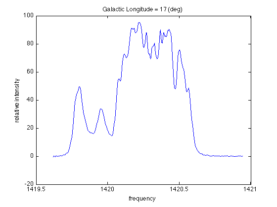

Orbital velocity of the cloud
Contents
Load and read data
This lab, very similar to Lab 3, requires you to 1) load .dat files to MATLAB and make plots, 2) use ginput to pull out some info from your plot, and 3) use MATLAB as a calculator to get some science ideas.
Let's load the data first:
lon17 = load( ... );
The first column in lon17 is the frequency channels used in the observation, and the second column is the relative strength of the H-alpha line. Let's take a look on this spectrum:
figure(1); clf; plot( ... ); ...
Remember, the smallest frequency represents the largest redshift, which gives us the tangent velocity. Recall your knowledge about ginput:
[x(1), y(1)] = ginput(1);
By doing this, you can build up an array of frequencies (x) using x(1), x(2), etc, increasing the number as you go through the files.
Save to .mat file
You can also save the array so you have a record of them:
save frequency.mat x
which will save the variable x in the file frequency.mat, exactly as you had it stored in your workspace (make sure you include the .mat ending on the filename). That way, you can continue your unfinished work anytime by loading the .mat file:
load frequency.mat
The orbital velocity
Back to the lon17 case. Now x(1) is the smallest frequency we want. Use the redshift equation provided in the handout:
c = ... ; % in km/s f_rest = ... ; % in MHz vt = ... ;
And the orbital velocity is: (note that you need to convert the longitude from degree to rad before you put it in the sin function!)
v_sun = ... ; % in km/s
vorb = ...
vorb = 215.1332
in unit of km/s.